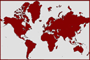
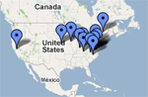

| Home | My 9s | Search | Tags | Exhibits | News | About |
Setting up a free Collex account is the easiest way to become a member of the NINES community. Sign up today to access to a personalized MY 9s page, where you can organize your collections, tag and annotate items and share your research using the Exhibit Builder.
The NINES community includes the Executive Council, the Research and Development team, and the Editorial Boards.

NINES works with a number of affiliate organizations to better serve the needs of scholars working in the Digital Humanities.
NINES sponsors a number of outreach efforts, including annual workshops and graduate fellowships.

Everyday users of NINES are important contributors to the project. We encourage you to create a Collex account which will let you collect, tag, and annotate digital objects you locate in NINES as part of your own research. The tags you apply to objects in your personal collections then become part of the Collex system, helping other users locate and re-purpose scholarly materials.
NINES is always in search of new projects and digital materials to be aggregated into the Collex interface. If you administer a project in nineteenth-century studies that you would like to be peer-reviewed by the NINES Editorial Boards please contact us at inquiries@nines.org.
If you are just beginning a digital project, and would like to learn more about creating effective and sustainable online scholarship, you may be interested in the NINES Summer Workshop, an annual event that instructs scholars in essential topics such as XML, XSLT, TEI encoding standards, and NINES metadata standards.
NINES is currently accepting applications for the 2009 NINES Summer Workshop in Dublin, Ireland. Send all questions and inquiries to workshops@nines.org, or click here to download the CFP.
THE NINES COMMUNITY
NINES is directed by an Executive Council, with a Research and Development Team overseeing software development and the integration of new resources. Three discipline-specific editorial boards peer review each scholarly project before it is aggregated. To get a sense of the variety of projects already a part of NINES, visit the full list here, or take a look at the frequently updated NINES Project Map at Google Maps.